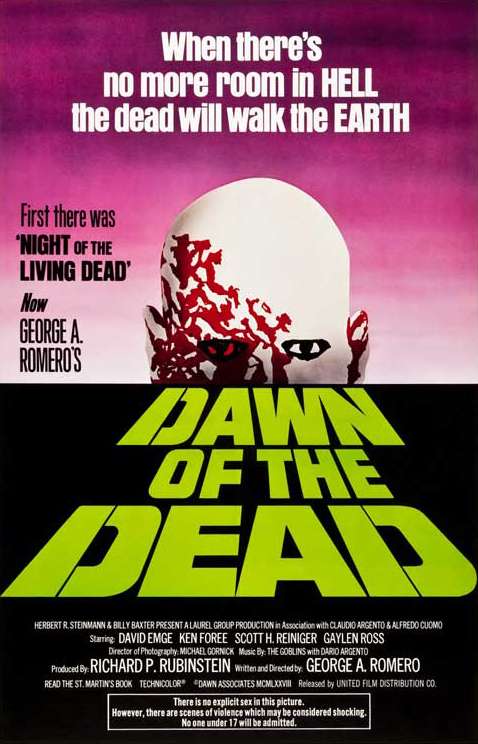
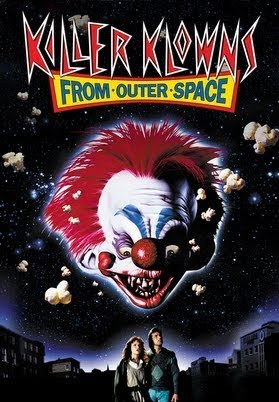

Chaz Black
Staff Writer
What was your first introduction to horror? How old were you?
One of the first horror movies I remember was in middle school when I saw the very first Nightmare on Elm Street. I knew I was supposed to be afraid but that was the funniest movie I ever saw.
What are your top 10 favorite horror films?
Now this is a tough one. Anyone who knows me knows that I'm infamous for saying "This is my favorite movie" quite often. My list is comprised of different films that meant something to me. With that being said, my favorite films are as follows:
 |
|
 |
|
 |
| Nightmare On Elm Street |
Thirteen Ghosts |
Candyman |
IT (2017) |
Dawn of The Dead |
|
|
|
|
|
| Child's Play |
Poltergeist |
Trilogy of Terror |
Puppet Master |
Jeepers Creepers |
What is your favorite sub-genre of horror?
Recently I starting liking haunted house/cursed type movies.
In your opinion, what are 3 underrated horror films that everyone should watch at least once?
t's hard for me to choose underrated movies because I choose based on what I find hilarious.



What was one of your most memorable movie theater experiences?
My most recent memorable movie theater moment was opening night to see the new adaption of "IT". It put the original to shame!